UNKNOWNHAWKINS / PROFILE PREVIEW
Anubhav Singh
Frontend Developer · UI Engineer · AI/ML Explorer · Cybersecurity Enthusiast





UNKNOWNHAWKINS / PROFILE PREVIEW
Frontend Developer · UI Engineer · AI/ML Explorer · Cybersecurity Enthusiast




